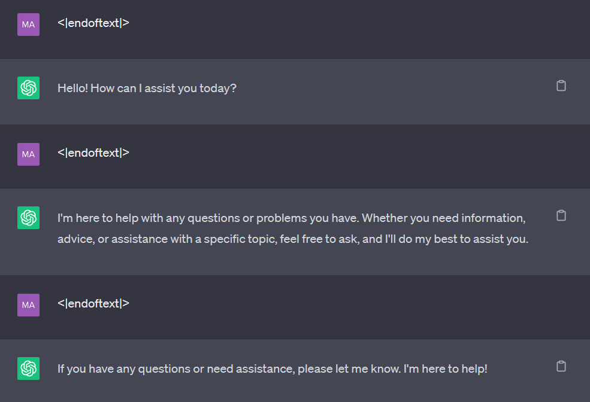

Bevor wir uns die Vorgehensweise ansehen müssen erst einmal ein paar Begriffe erklärt werden. Die Zusammenhänge von Wörtern bzw. Wortteilen werden in einem Tensor gespeichert. Ein Tensor ist eine höherdimensionale Form eines Vektor. Ein Vektor ist eine Liste von Zahlen worin jeder Zahl ein Index zugewiesen werden kann. So befindet sich im Vektor
$$\begin{pmatrix}
1 \
2 \
3
\end{pmatrix}$$
am Index $4$ die Zahl bzw. der Skalar $7$. Man kann also mit einem 1-Dimensionalen Index (Fachbegriff wäre Tupel) genau beschreiben wie die Werte im Vektor verteilt sind. Bei der Matrix
$$ \begin{bmatrix} 1 & 2 & 3 \ a & b & c \end{bmatrix} $$
braucht man schon zwei Werte um eine Position innerhalb der Matrix zu beschreiben. An der Position $(1,1)$ befindet sich die Zahl $1$. Tensoren sind nun die Erweiterung von Vektoren und Matrizen in höhrere Dimensionen. So könnte man mit dem Tupel $(1,1,1)$ einen Wert in einer "3D-Matrix" beschreiben. Der Fachbegriff dafür wäre Tensor. Wie eine "3D-Matrix" aussehen könnte kann man sich noch vorstellen. Jedoch gibt es keine Grenzen wie viele Dimensionen ein Tensor haben kann.
Aktuelle große Sprachmodelle (engl. Large Language Models) verfügen über einen 12.000-Dimensionalen Tensor in welchem in verschiedenen Indices Tokens abgespeichert werden. Damit ist es möglich innerhalb eines Systems Kontext zu simulieren.
In einem 12000-Tensor (bei ChatGPT sind es 12288) sind die Möglichkeiten Verbindungen darzustellen reichhaltig genug um die des Gehirns genau genug zu simulieren um menschliche Sprache numerisch abzubilden.
Aber was sind jetzt diese Token? Token sind Textbausteine welche die KI während dem Training so oft gesehen hat dass sie es für Sinnvoll erachtet hat diese zusammenzufassen. Kurze und häufige Wörter haben nur einen Token. So hat laut dem ChatGPT Tokenizer das englische Wort The dem Token 494. Längere Wörter bestehen aus mehreren Tokens. Spengergasse besteht z.B aus den 5 Token S/pen/ger/g/asse. Für die KI im Rahmen ihres Kontext-Tensors bedeutet Spengergasse [50, 3617, 1362, 70, 21612].
Ein Transformer (das T in GPT) versucht nun diese Tokens in den Kontext-Tensor zu geben um vorherzusagen welcher Token am wahrscheinlichsten der nächste ist. Ganz wichtig:
Ein Sprachmodell versucht immer einen Token nach dem anderen vorherzusagen.
Beim Umgang mit Sprachmodellen ist diese Vorgehensweise der KI immer zu beachten. Mit der Fragestellung an die KI sollte der nächste Token so einfach wie möglich vorherzusagen sein. Stell dir vor du startest einen Satz und ein Freund von dir soll diesen beenden. Sowohl Menschen als auch KIs werden es schwer finden den Satzteil Ich habe zu vervollständigen. Es fehlt der Kontext.
Durch eine genauere Ausformulierung kann man jedoch genug Kontext erzeugen um eine vorhersage der nächsten Wörter/Tokens zu vereinfachen.
Der Satzteil Ich habe Hunger und würde gerne etwas ist schon wesentlich leichter vervollständigbar.
Mit einem Prompt gibt man einer generativen KI einen Text den sie versucht - Token für Token - zu vervollständigen. Bei einem Chatbot ist die Vervollständigung meist die Antwort auf eine Frage. Es kann aber auch eine Anweisung enthalten welche dann ausgeführt wird.
Nachdem eine KI schon auf vielen Daten vortrainiert ist kann es möglich sein dass man auch ohne ein Beispiel eine brauchbare Antwort bekommt. Der Kontext wurde also schon antrainiert.
Beispielhaft z.B folgender Prompt an ChatGPT:
Anweisung: Programmiere mir in C# eine Funktion welche die Fibonacci-Folge auf der Konsole ausgibt.
Code:
ChatGPT
Hier ist eine C#-Funktion, die die Fibonacci-Folge auf der Konsole ausgibt:
using System;
class Program
{
static void Main()
{
int count = 10; // Anzahl der Fibonacci-Zahlen, die ausgegeben werden sollen
Console.WriteLine("Fibonacci-Folge:");
PrintFibonacciSequence(count);
Console.ReadLine();
}
static void PrintFibonacciSequence(int count)
{
int first = 0;
int second = 1;
Console.Write($"{first}, {second}");
for (int i = 2; i < count; i++)
{
int next = first + second;
Console.Write($", {next}");
first = second;
second = next;
}
Console.WriteLine();
}
}
Dieses Programm gibt die ersten 10 Fibonacci-Zahlen auf der Konsole aus. Du kannst die Variable count anpassen, um eine beliebige Anzahl von Fibonacci-Zahlen auszugeben.
Mit vermindertdem Kontext ist des der KI (und auch Menschen) schwerer möglich eine gute Antwort "vorherzusagen". Eine weitere bekannte Folge neben der Fibonacci-Reihe ist die Lukas-Folge. Möchte man diese von einem Programm generieren lassen wird das mit folgendem Prompt schwierig.
Prompt an ChatGPT:
Lukas-Folge.
ChatGPT
Es tut mir leid, aber ich kann keine Informationen über eine "Lukas-Folge" finden. Könnten Sie bitte weitere Informationen bereitstellen oder Ihre Frage genauer formulieren?
Zero-Shots funktionieren gut bei einfachen Beispielen. Um komplexe Aufgaben von einer KI erledigen zu lassen kann es helfen ein paar Beispiele zu geben als Kontext. Z.b folgendes:
Anweisung
// get keys from first row only
const firstRowKeys = Object.keys(sheetData[0]);
// get keys from each row and remove duplicates by using a set
ChatGPT
const allKeys = new Set<string>();
sheetData.forEach((row) => {
Object.keys(row).forEach((key) => {
allKeys.add(key);
});
});
Auch ist es möglich beim Programmieren den Prompt sich Iterativ durch Erweiterungen wie `Github Copilot` zu generieren.
Was passiert wenn man jemanden die Frage stellt: Wie viel ist 2734 x 5?. Und man muss wie eine KI Wort für Wort eine Antwort produzieren? Die nächsten Wörter werden wahrscheinlich nicht die Antwort auf die Frage sein. Sondern eher "Ich weiß es nicht." oder "Lass mich das kurz ausrechnen." Was wäre wenn man die Frage umformuliert: Was ist das Ergebnis der Multiplikation 2734 x 5? Als kleine Hilfestellung: 4x5x1=20 an der Einerstelle. 3x5x10 ist 150 an der Zehnerstelle. An der Hunderterstele ist es 7x5x100 und an der Tausenderstelle 2x5x1000. Du musst also die Zahlen 20,150,3500 und 10000 addieren. Das Ergebnis davon ist. Dann wäre es dadurch das man den eigenen Denkprozess dargelegt hat sowohl für einen Menschen als auch eine KI einfacher die nächsten Token vorherzusagen bzw. sich in die Denkweise "hineinzuversetzen".
Achte beim Umgang mit einem LLM also immer darauf deine Denkprozesse so genau wie möglich zu beschreiben damit diese von der KI weiter gesponnen werden können.
Bei der Self-Consistency werden Few-Shot Prompting und Cot (Chain of Thought) Promting kombiniert. Es werden in einem Prompt mehrere Denkprozesse detailiert beschrieben. Es ist dann die Aufgabe der KI auszuwählen welcher Denkprozess am besten passt.
Im Prompt Engineering Guide sind noch einige weitere Techniken aufgelistet. Z.b eine Fragestellung mit Allgemeinwissen als Kontext zu erweitern, Bei RAG wird das Allgemeinwissen (bzw. Speazialwissen) automatisch hinzugefügt. Es können Dinge wie Rechenaufgaben und die Validierung logischer Ausdrücke an externe Programme weitergegeben werden uvm.
Um einer KI eine Frage stellen zu können muss man zunächst Zugriff auf ein KI System haben. In diesem Abschnitt wird beschrieben welche Möglichkeiten man 2023 hat um ein KI System nutzen zu können. Aufgrund der hohen Ressourcennutzung ist es aktuell noch einfacher einen Prompt an einen Server zu senden und die Antwort dann zurückgesendet zu bekommen.
OpenAI, der Ersteller von ChatGPT hat keine offiziellen Zahlen veröffentlicht wie hoch die Systemressourcen sind um deren KI auszuführen. Man kann allerdings abschätzen dass ca. 6 Nvidia A100 Tensor GPUs, 16-Kern CPUs, 64+ GB RAM und mehrere 100GB Festplattenspeicher rein für die Ausführung benötigt werden.
Damit kommt man auf ein Computersystem welches Kosten von mehreren 100.000€ besitzt. Auch ist die Nachfolge-GPU H100 nicht gerade billiger, das Potential für die Fähigkeiten von KIs wird dadurch aber erhöht.
Für das Trainieren einer KI wird ein vielfaches der Ressourcen benötigt, also mehrere Millionen Euro. Es ist aber davon auszugehen dass bei einer Optimierung der KI-Systeme diese weniger Rechenleistung benötigen werden, und gleichzeitig Hardwareherstleller Chips entwickelen werden die optimiert darauf sind KI-Systeme auszuführen. Also sehr große Matrix bzw. Tensormultiplikationen durchführen zu können. Vielleicht kann dein Computer schon in ein paar Jahren eine KI lokal ausführen die auf dem Niveau des heutigen ChatGPT ist.
Aufgrund der aktuell noch hohen technischen Anforderungen konzentriert sich dieser Ratgeber auf KI-Angebote welche man über das Internet verwenden kann. Es ist jedoch davon auszugehen dass in den nächsten Jahren eine Offline-KI immer leistbarer wird.
chat.openai.com
Enthalten in einer Schülerlizent von Jetbrains-Produkten basiert auf ChatGPT
Basiert auf ChatGPT, kann jedoch zusätzlich recherchen im Internet anstellen.
KI-Modell trainiert von Meta und der Öffentlichkeit frei zur Verfügung gestellt.
LLaMa so umgefort dass es auch auf heute verfügbarer Hardware einigermaßen schnell läuft. Kann hier heruntergeladen und lokal ausgeführt werden: https://github.com/antimatter15/alpaca.cpp
Beim Natural Language Processing (NLP) wird zunächst die natürliche Sprache analysiert und um bestimmte Informationen erweitert (Data Augmentation). So wird zu jedem Wort bzw. Wortteil gespeichert welche Art von Wort (Subjekt, Prädikat etc.) es ist. Diese Information wird dann an einen Transformer oder an andere Systeme weitergegeben welche eine Folge von Wörter vorhersagen können. Aktueller Stand der Technik sind Transformer. Primitivere Techniken wären LSTM oder Markov Ketten.
Abbildung: <|endoftext|> wird zum Textende tokenisiert 
Temperature
Grad der zufälligkeit.
Open AI Cookbook eine Sammlung von Unterlagen wie man mit LLMs von OpenAI am besten umgeht
promptingguide.ai eine Sammlung von Wissenschaftlichen Artikeln und beschreibungen wie man eine Anweisung an eine KI formuliert